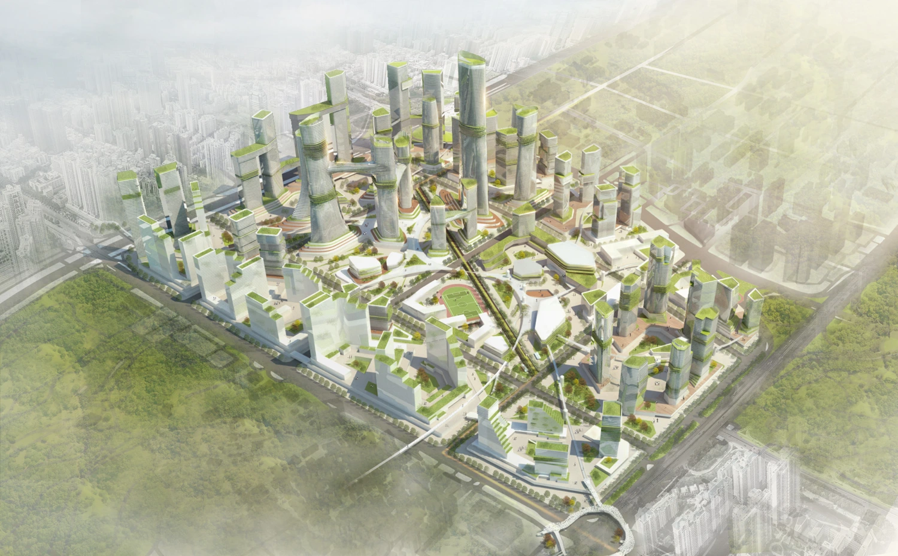
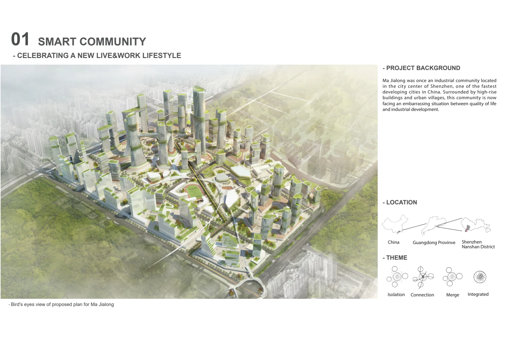
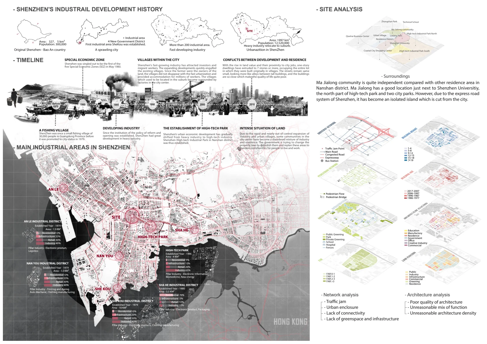
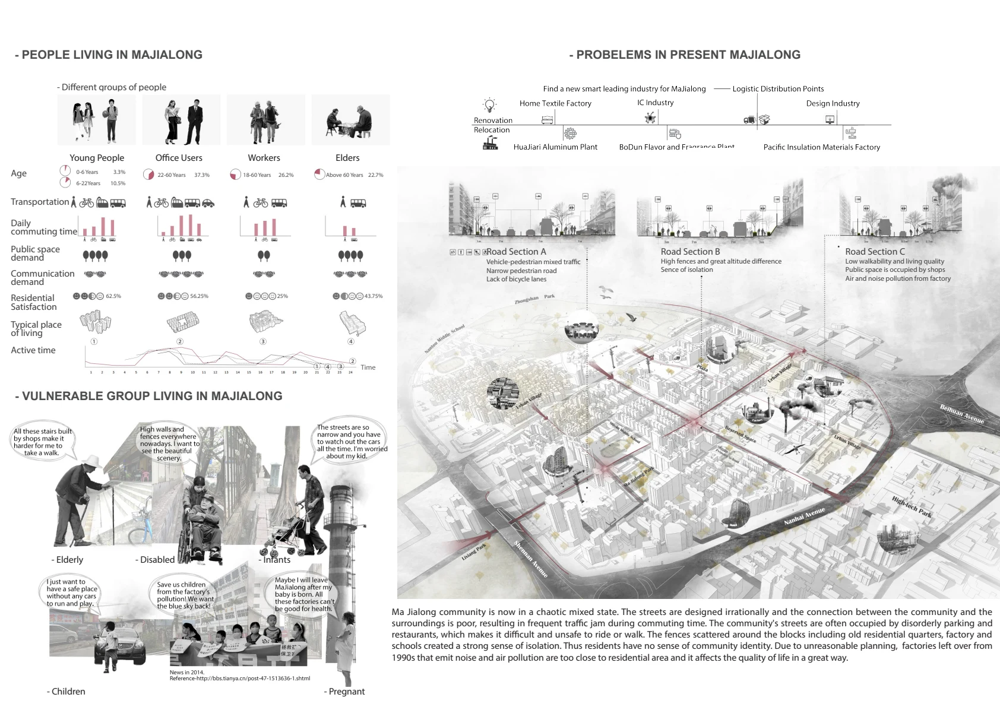
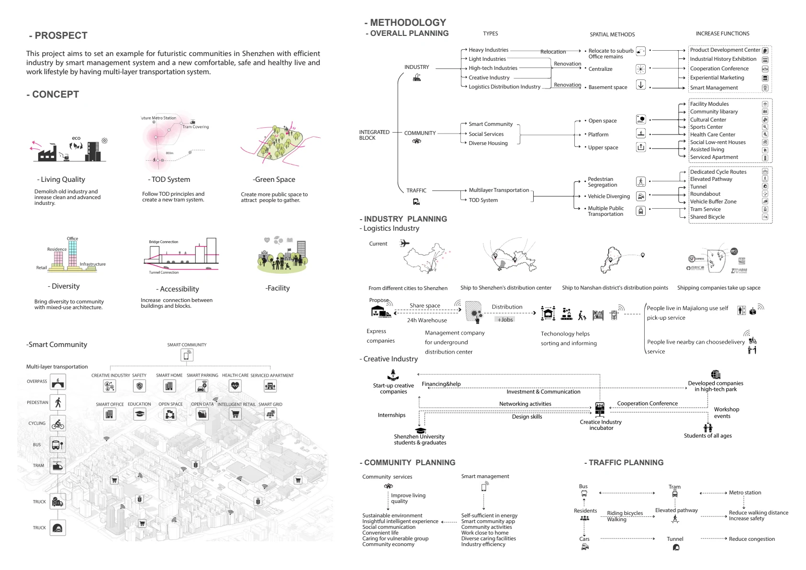
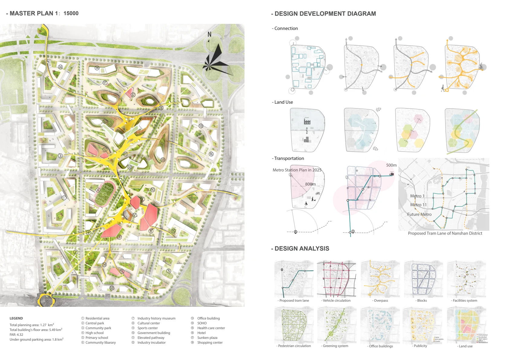
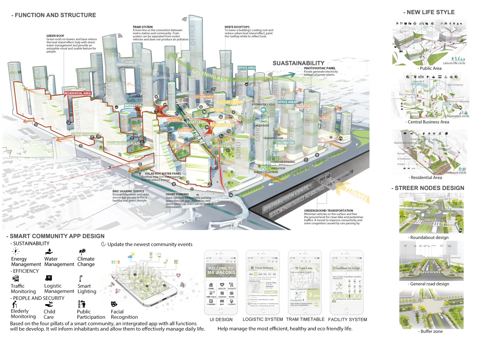
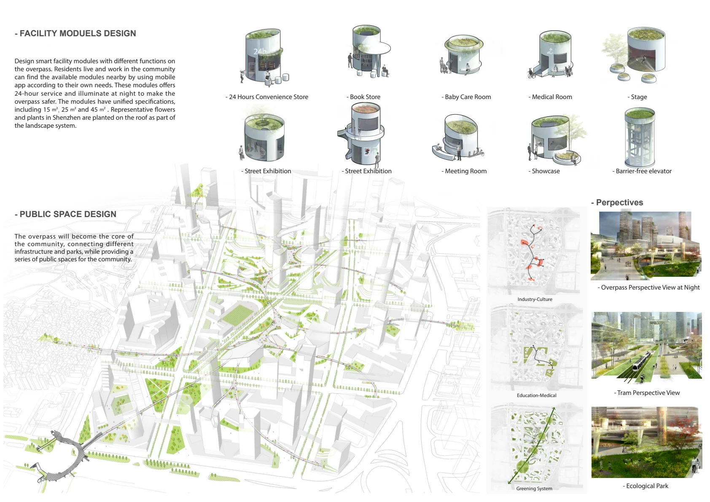

2017–2018 · Urban design · Shenzhen
Smart Community
A neighbourhood proposal for Majialong that brings workplaces, housing and shared public spaces together.
Download full portfolio (PDF)Complete portfolio · 32 pages · 77 MB








1 / 8
How can a neighbourhood bring work and everyday life closer together?
The Majialong proposal treats industry, housing and public space as connected parts of a neighbourhood. Urban analysis and a master plan explore how shared spaces can connect activities that are often planned separately.
My contribution
Individual project: urban analysis, concept, master plan and design visualisation.
Project team
Shuyu Lei
Download full portfolio (PDF)Complete portfolio · 32 pages · 77 MB
Next project